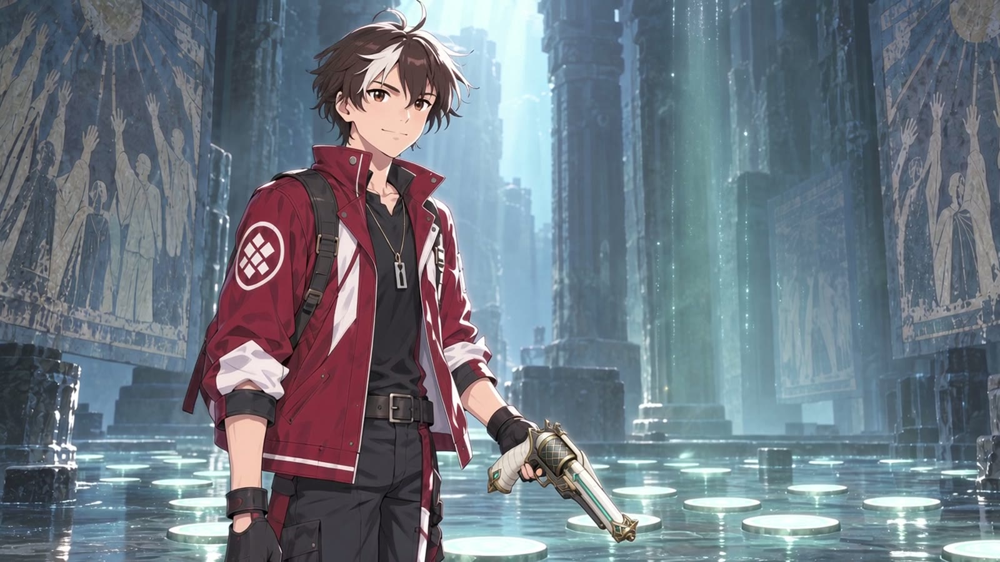
救助屋見習い
ジン
「これは、町の水を戻すのに要るんだ。」
ヘイズの救助屋で働く見習い。生まれつき体に「糸」が流れず、救助屋の道具を使いこなせない。神殿で白い銃 Rem を手にする。
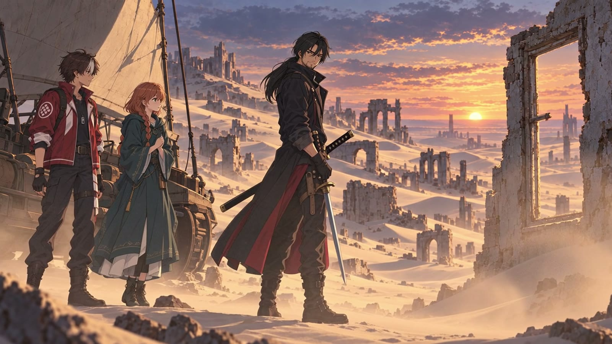
Promotion Video
World
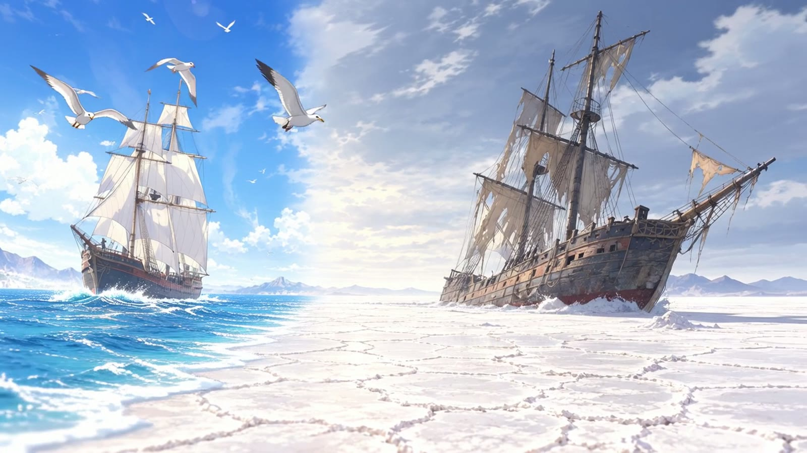
はるか昔、
突如として海が消えていった。
残されたのは、どこまでも続く白い砂と、座礁した船の群れ。人々はかつての海の底に町を作り、わずかな井戸の水を分け合って暮らしてきた。
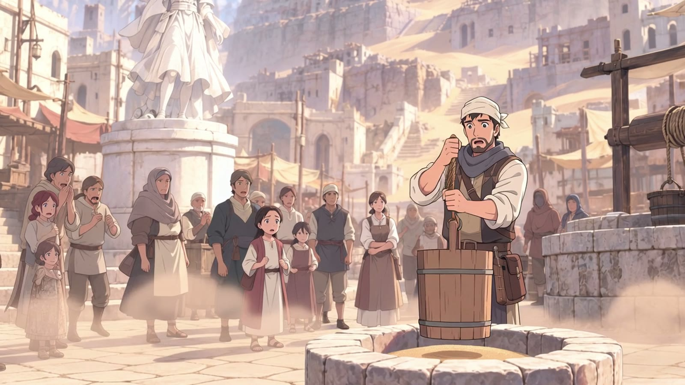
水を失い、
滅びゆく町。
座礁船の町ヘイズ。井戸の水は日ごとに減り、引き上げた桶が空のまま戻ってくる日も近い。町の人々は、それを口に出さないようにしている。
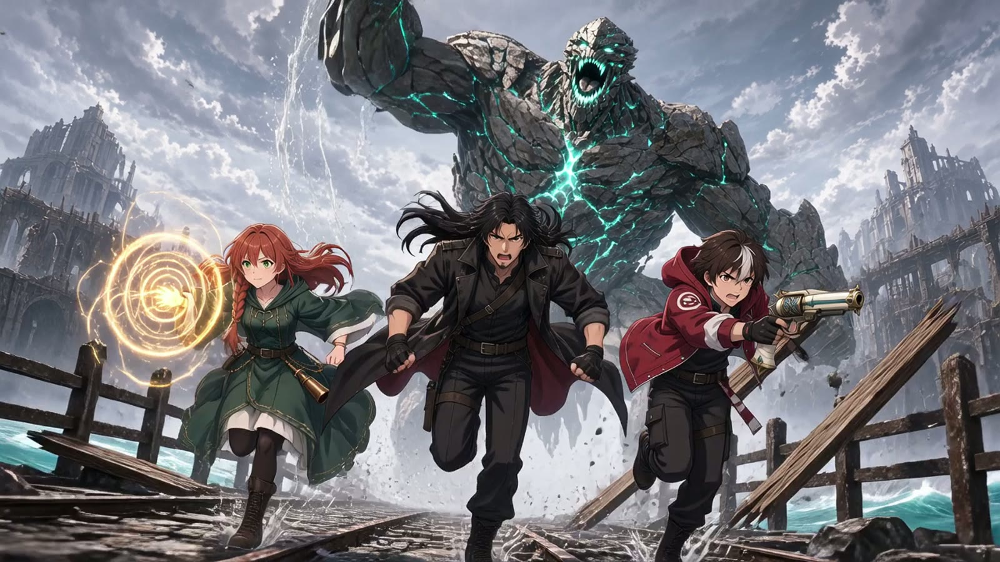
水を涸らす元凶――
「厄災」
荒野のどこかで、水が消える。そこには決まって、人の手には負えない何かがいる。人々はそれを「厄災」と呼んで恐れてきた。
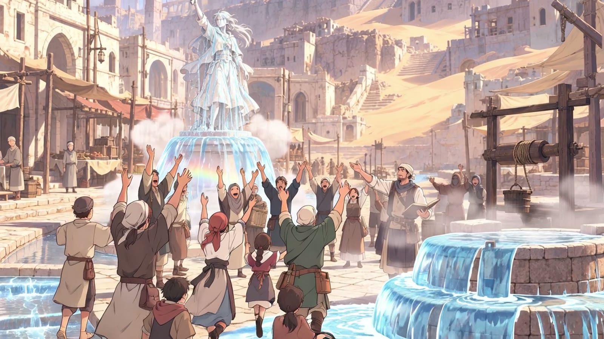
水を取り戻す旅が、
はじまる。
町を救う手がかりを求めて、救助屋見習いの少年は海の底の荒野へ踏み出す。仲間と力を合わせ、厄災に立ち向かうために。
Rem
沈んだ神殿の台座に眠っていた、象牙色の大きな銃。少年が手にしたとき、銃身の細い線が青く脈打った。
この銃の全力の一発だけが、厄災を光で包み、封じることができる。
――けれど、その理由を知る者はいない。
「――照合。」
Characters

救助屋見習い
「これは、町の水を戻すのに要るんだ。」
ヘイズの救助屋で働く見習い。生まれつき体に「糸」が流れず、救助屋の道具を使いこなせない。神殿で白い銃 Rem を手にする。
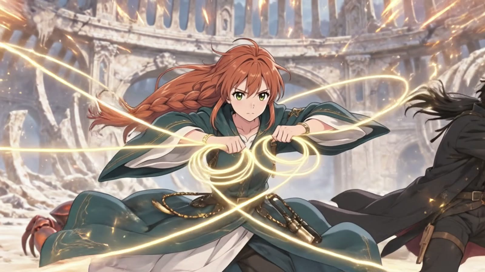
魔法使い
「わたしは、レムに助けられたの。」
火・水・風・土、四本の「糸」を借りて、返す魔法使い。Rem のことを、誰よりも知りたがっている。
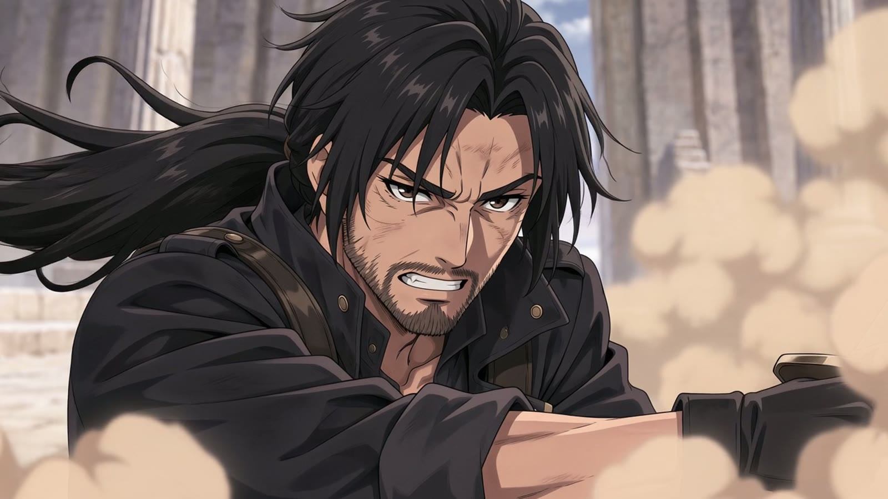
用心棒
「名前を付けると、手放せなくなるぞ。」
宿の階段にいつも腰かけている無口な剣士。腕は確かだが、多くを語らない。なぜか、銃のことに詳しい。
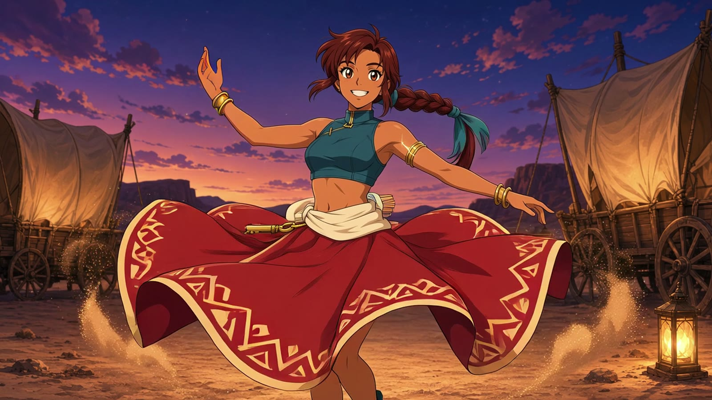
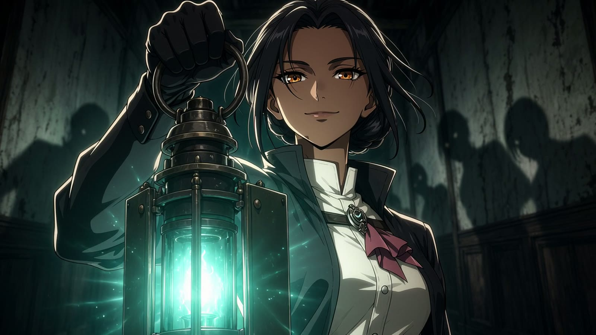
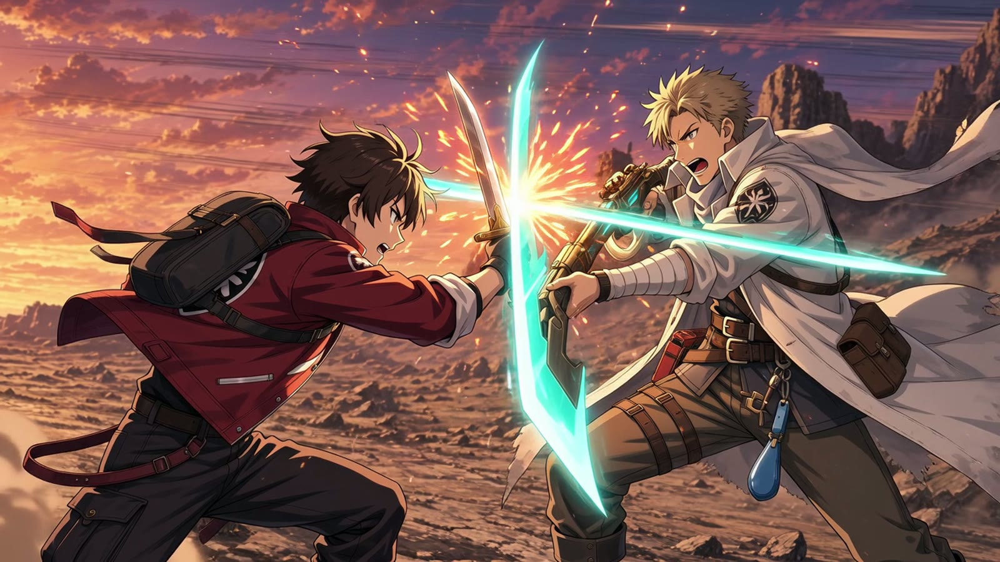
System
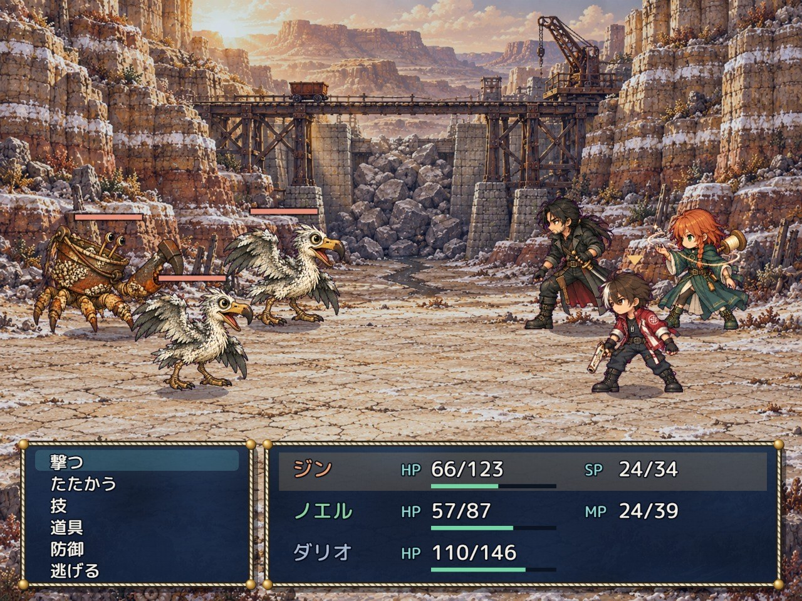
撃つ・たたかう・技・道具・防御。ジン、ノエル、ダリオの3人に命令を出して戦う、じっくり考えるターン制の戦闘。
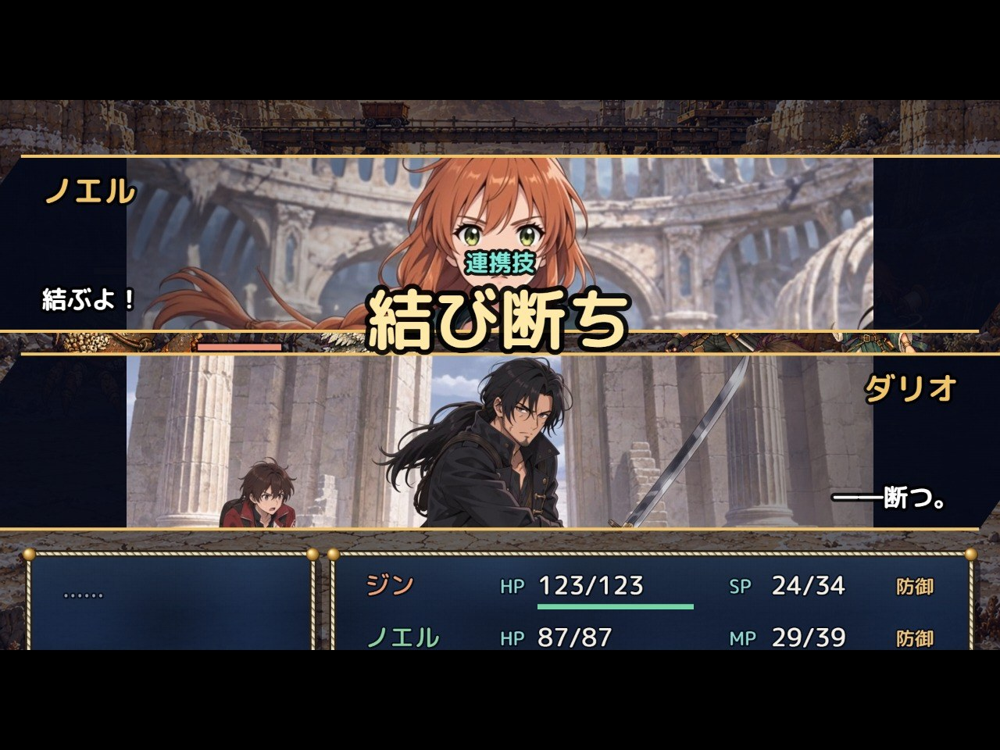
ノエルの糸で敵を結び、ダリオが一体ずつ断ち切る。仲間の力をつなげる連携技が、戦況をひっくり返す。
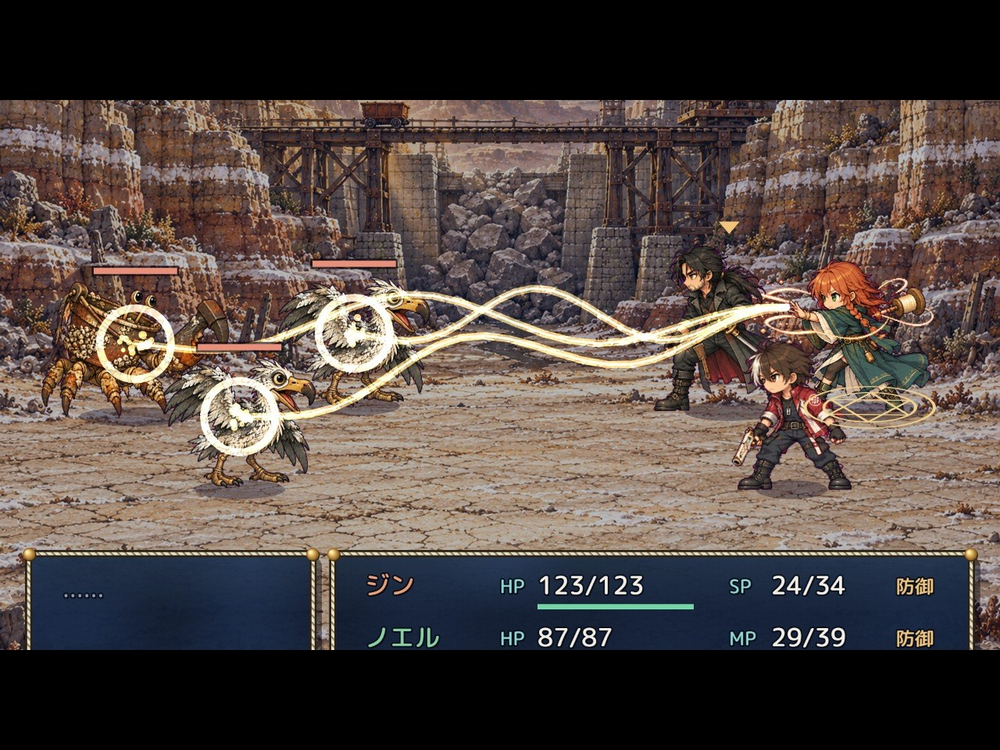
厄災には、それぞれ苦手な「糸」がある。火・水・風・土を見きわめ、弱いところを突け。
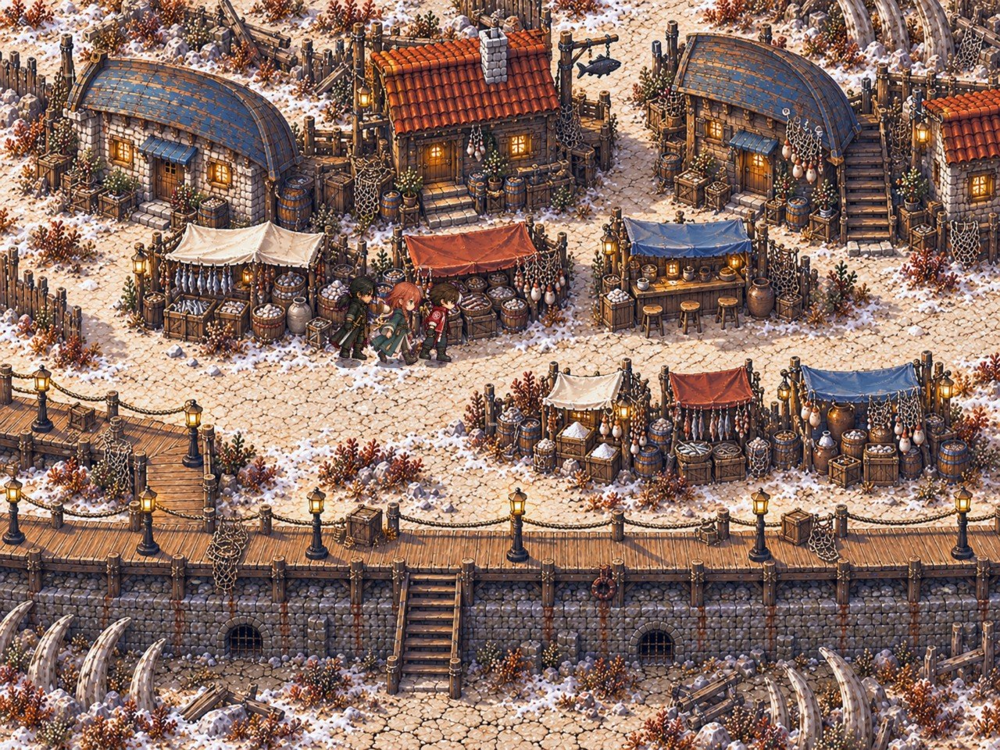
座礁船を組み上げた町、塩の採掘場、沈んだ神殿。描き込まれたドット絵の世界を、3人で旅する。
なぜ、Rem だけが
厄災を封じられるのか――
海底の荒野